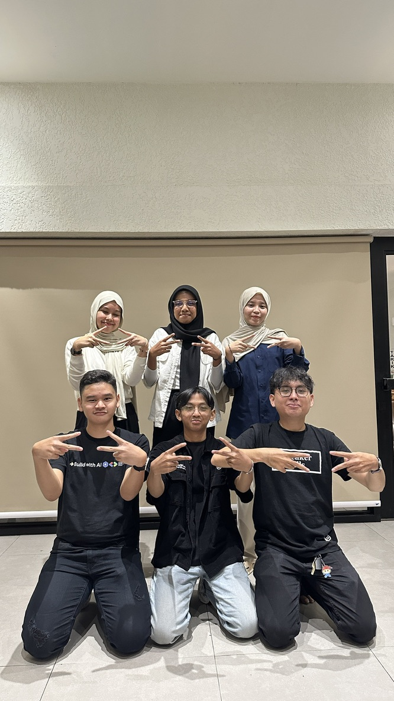

August 2025 - Present
I produced and edited video content for tech events such as workshops, Study Jams, and community meetups, capturing key moments and delivering visually engaging outputs that aligned with event objectives and audience interests. I collaborated with the Creative Media team to craft storytelling through videography and motion graphics, ensuring professional and consistent branding across platforms. Additionally, I contributed to strengthening the GDG on Campus brand presence by adhering to visual guidelines while incorporating innovative video production techniques to enhance community engagement and visibility.
Key Achievements:
- Produced high-quality video content to document and promote GDG on Campus events, workshops, and initiatives.
- Collaborated with the Creative Media team to develop engaging storytelling through videography.
- Managed video editing, motion graphics, and post-production to ensure professional and consistent outputs.
- Contributed to increasing community visibility and engagement through creative multimedia projects.